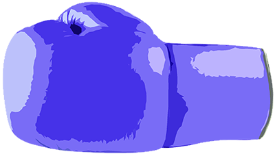
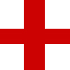
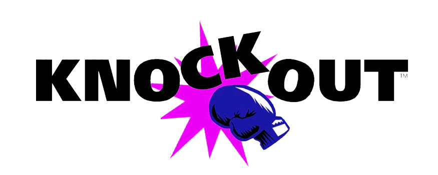
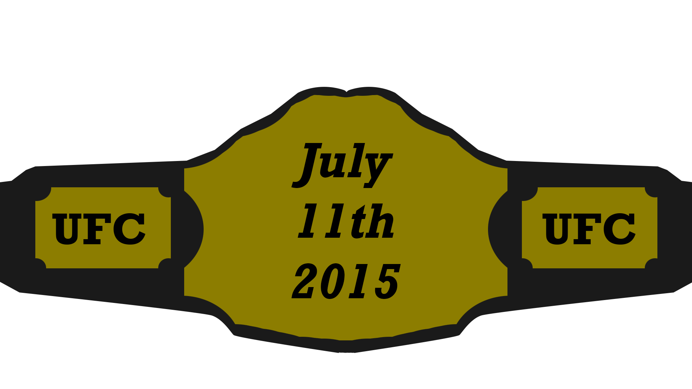
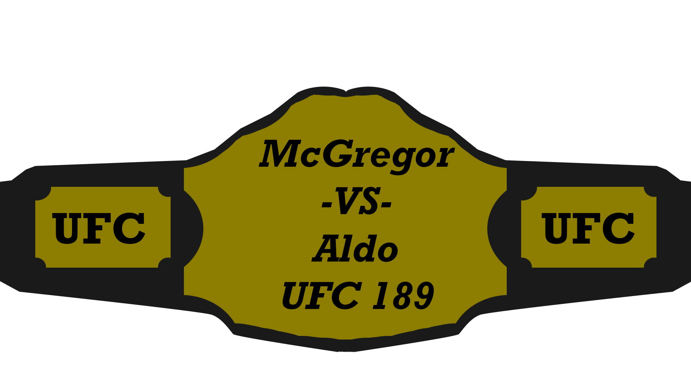

McGregor made his professional MMA debut in March 2008 beating Gary Morris by TKO. 
13 fights later and with a record of 12-2 in MMA it was confirmed that McGregor signed a multi-fight agreement with the UFC.
Prior to this McGregor held both the CWFC Featherweight Championship and CWFC Lightweight Championship which made him the first professional Irish fighter to hold titles in two separate divisions.
On April 6th 2013 at UFC on Fuel TV 9, just over a minute into his UFC debut against Marcus Brimage he won the bout by TKO.
At UFC Fight Night 26 McGregor defeated Max Holloway by unanimous decision.
After the Holloway fight it was announced that he tore his ACL (anterior cruciate ligament) and needed surgery which would keep him out of action for up to 10 months. 
Upon his return at UFC 46 McGregor beat Diego Brandão by TKO in the first round.
McGregor faced Dustin Poirier on September 27, 2014 at UFC 178. He won via TKO in the first round, becoming the first man to finish Poirier via KO/TKO in a fight. 
UFC Fight Night 59 saw McGregor face Dennis Siver and he dominated the fight. Following a TKO victory in the second round McGregor taunted the current title holder Jose Aldo by leaving the octagon and confronting him in the crowd.


UFC President Dana White later admitted that McGregor is due to face Aldo at UFC 189 on July 11th 2015 in Las Vegas.
To date McGregor has a record of 17-2 and has won all of his last 13 fights.
Of his 17 wins, 15 have been by knockout while one for each submission and by decision.